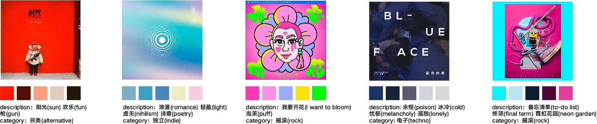
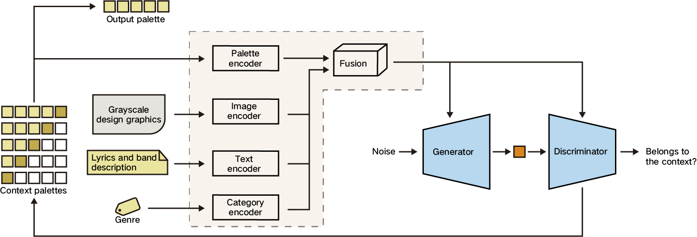
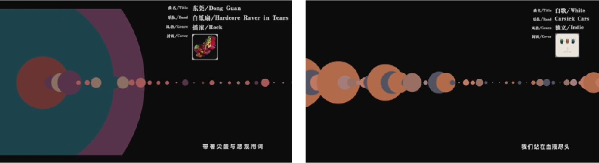
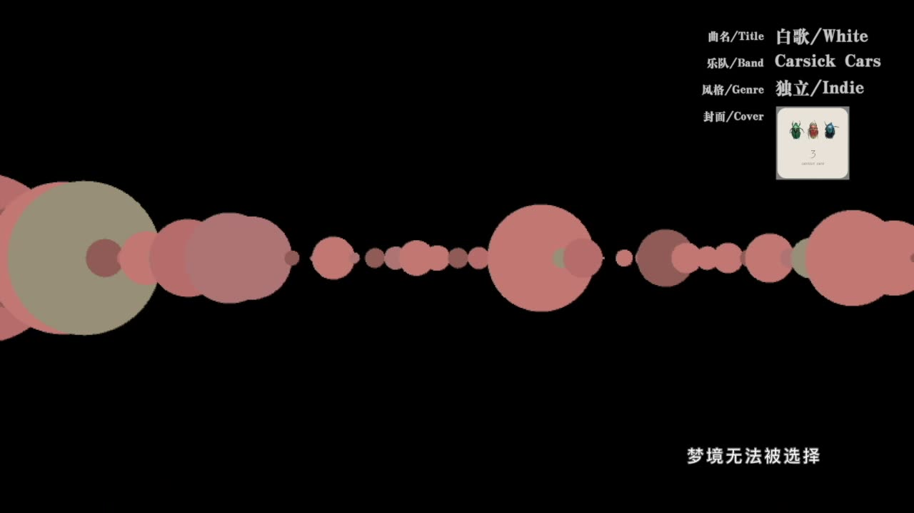

Semantically Enriched Music Visualization via Multimodal Color Generation
1. PubPub Link
https://nime.pubpub.org/pub/semvmcg/draft?access=p4lzg5lw
2. Abstract
Music visualizers have been extensively used to bring songs to life with animated graphics of various shapes and colors that reflect audio features such as loudness, frequency, and rhythm. The linkage between color and emotion has long been studied in color theory, e.g., happy colors are typically bright and warm while sad colors are often dark and muted. The emotion of a piece of music is also related to music semantics (such as lyrics and song descriptions), music genre (such as rock, punk, techno etc.), and visual designs (such as album cover and live show posters). However, the colors used in most existing music visualization are often randomly generated or selected from a preset color palette without considering the related music semantics and visual design. In this project, we aim to enrich the music visualization colors by infusing semantics from song lyrics, genre information, and graphic features from visual designs via training a multimodal deep generative network.
3. Program Description


Figure 1. Multimodal Color Dataset
We build a unique dataset to train our model, which contains 948 graphic design images from 189 Chinese bands with corresponding event/album descriptions, genre categories and color palettes as shown in Figure 1. More specifically, the color palettes are first generated by extracting key colors from the design graphics via an algorithm and then manually adjusted by a designer.


Figure 2. Model Architecture
Figure 2 shows the architecture of our model based on conditional generative adversarial network (cGAN). Given the limited training samples, we augment the color dataset by leveraging the relationships among the colors in the palette and ask the discriminator to determine whether the generated color is considered the next color in the palette. Previous colors are fused together with the other three inputs (design graphics, text descriptions, and genre) to form the multi-modal context, which is fed to the cGAN as a condition to predict the next color. When generating colors, we want to increase the color diversity and thus feed each sentence in the lyrics together with album image and genre to our model to generate a color palette. Then, all generated color palettes are combined for the whole song.
We use Processing to develop the music visualizer as shown in Figure 3. We select the top 50 audio frequencies as the x-axis and use the circle size to represent the amplitude. We sync the generated color palettes with the corresponding sentences of the lyrics to achieve a better visual effect via color transitions. A main color palette is manually defined for each song by a designer for the instrumental (no lyrics) part. The demos are informally evaluated by a number of designers, who agree that the emotion expressed from the song semantics can often be correctly reflected by the colors, e.g., the color tone in figure 3(a) is aligned with the keyword “sad” in the lyrics and figure 3(b) has the reddish colors to reflect the keyword “blood”.


(a) (b)
Figure 3. Semantically Enriched Music Visualizer using Processing
The dataset, code, and demos have all been open-sourced. For future research, we plan to further develop our dataset by collecting more data samples and enhance the music visualizer by developing more sophisticated visual effects.
4. Media

▶Video 1. The semantics of the music are illustrated by colors
5. Links
Demo1: https://www.bilibili.com/video/BV1Cp4y1H7To/
Demo2: https://www.bilibili.com/video/BV1Qv411Y7C7/
Demo3: https://www.bilibili.com/video/BV1zv411Y73n/
Dataset and code: https://github.com/tezignlab/subculture-colorization/